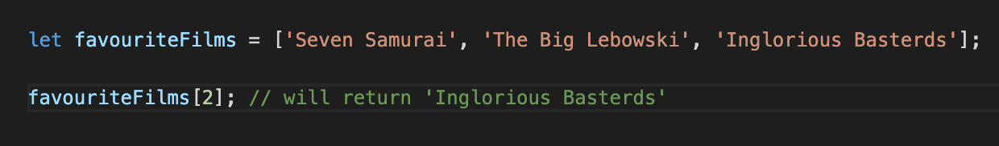
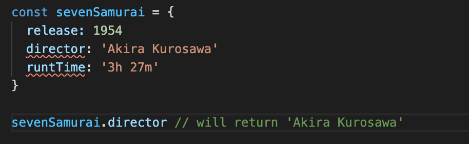

HTML and CSS go hand-in-hand. Where there's one, you'll find the other. But how can they be explained in a real world, every day scenery? Easy, lets take a look
HTMl is the structure of your website. It's the bones. The walls. It defines the layout that holds everything together. Think of HTML like a builder. They lay the foundations, put up the walls, screw in the roofing, all to give you a structurally sound home.
Now, that builder may be a master at creating a structurally sound house, but has no clue how to style it and make it look appleaing for potential buyers. That's where CSS comes in
CSS is the interior designer of the whole operation. Choosing what colour everything should be, where everything should be positioned, and ultimately, deciding the entire look and feel of the home.
Although HTMl can survive on it's own, it's the relationship it hs with CSS that makes it really stand out.
Rather than reading code, top to bottom, each line in order, control flow is what makes JavaScript special.
Now, with Javascript, code is still run in order from the top to the bottom line, unless the computer runs across something that changes the control flow.
But what are these loops? Rather than getting all technical right away, let's think of an example.
Imagine you're waking up in the morning and you go into the kitchen to make toast. Pretty simple, right? You wake up, walk to the toaster, put some bread in, wait, get your toast out, apply favourite spread. Easy.
But wait just a minute. What if the toaster isn't plugged in? What if there's no bread in the house? What if your favourite spread is empty? Well, obviously you're an adult and you can deal with this type if situation but a computer doesn't know what to do?
This is where we can change the control. We can say things like wake up, walk to toaster, if toaster isn't working, check to see if it's plugged in, if not plug in, put bread in toaster, if no bread available, go to the bakery and purchase bread and so on and so on.
The DOM stand for Document Object Model and is a programming interface that can be used on webpages.
When using the DOM, it displays the content of any given webpage in a tree-like structure, which in turn makes it easier to navigate and find the elements one would want to modify or remove.
Using the DOM, you can target specific elements within a webpage with the likes of document.getElementById('InsertNameHere') or document.getElementsByClassName('InsertNameHere').
The document.getElementById('InsertNameHere') would target all IDs with that specific and the same with document.getElementsByClassName('InsertNameHere'), all classes with that specific name would be targeted.
Using this method, once you have targeted the element you want, you can then go ahead ans start to apply any changes you want to it.
Arrays can be considered as list like objects that contain one object but multiple valaues stored inside of it.
Maybe we've got a list of someone's favourite films and rather than writing out each film as it's own variable, we can write it like the following:
Within this array, you can access individual items using bracket notation. As you can see above, the second set of code returns 'Inglorious Basterds'.
But hang on? You asked for the second item of the array and it returned the third and last item of the array? Yes, to us that's true, but with computer talk, counting starts at 0.
And what about objects? Obejcts are a collecitons of infomation on a single item. Take a look at the image below for more info:
And just like with arrays, we can access certain information of an object by passing through the variable name followed by the property name. Which is what you can see the second bit of code does in the image abvove.
Functions are a core concept of JavaScript. They're a block of code designed to complete a particular task and can be called as many times as you like. Which saves you having to rewrite code later on.
If you need to change to a function, it only needs to be updated once and it'll aplply to all instances of that function, which again, saves you having to rewrite multiple lines of code.